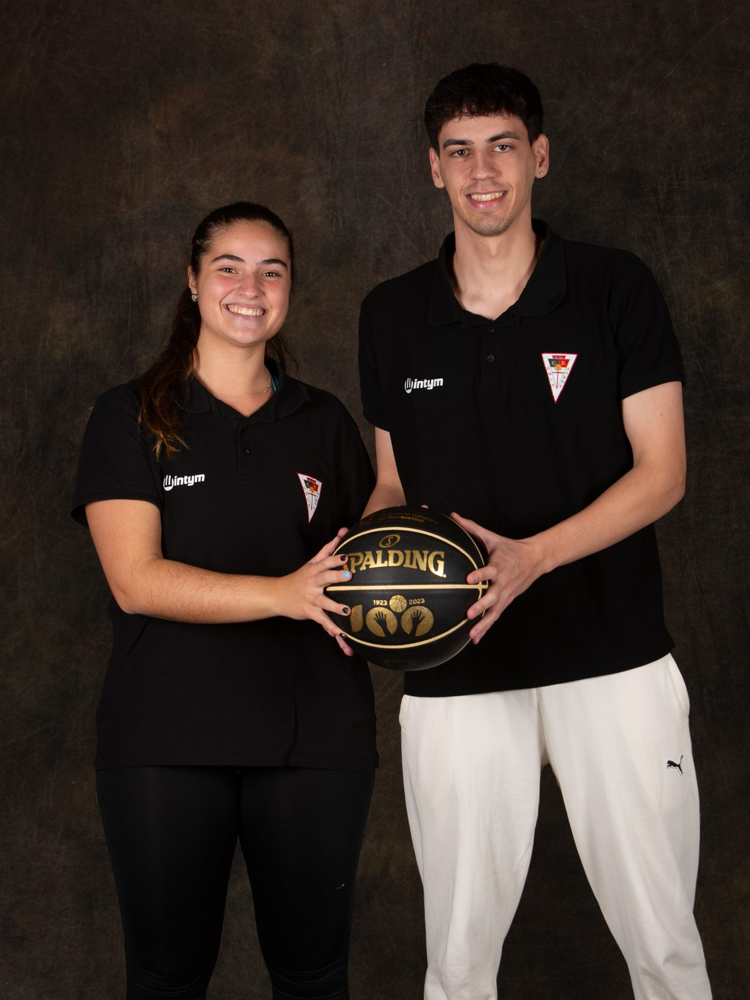

Impulsant el desenvolupament esportiu i humà al Poblenou i el Clot.
El club en xifres
Poblenou i el ClotComunitat
Les famílies
· Comunitat
+450 famílies
+450 famílies i +40 equips de formació masculins i femenins, impulsant el desenvolupament esportiu i humà dels nens i nenes del Poblenou i el Clot.
Igualtat i lideratge femení
Model estructural, no estètic
· Igualtat & Lideratge
Lideratge femení
65,5% del staff tècnic són dones — 38 entrenadores actives al club, amb un pla propi de formació i mentoria interna.
Per al detall complet: Bàsquet femení i El Mètode Barna.
«No fem campanyes.
Creem referents.»
Els Màgics
Diversitat & inclusió
· Diversitat & Inclusió
Els Màgics
Oferim espais de pràctica esportiva a joves amb diversitat funcional. Equips inclusius que van més enllà del bàsquet: aprenen valors, fan amics i formen part d'una comunitat real.
- Integració social real, dins i fora de la pista
- Bàsquet adaptat com a eina de vida
L'esport no entén de barreres. Els Màgics, tampoc.
Comunitat i educació
Escoles de vida
· Comunitat & Educació
Escoles de vida
- Els clubs esportius són escoles de vida
- Complement informal al sistema educatiu
- Aprenentatge en valors, infants i famílies
«Cada nen necessita un equip.— CB Grup Barna
Cada equip necessita
una comunitat.»
Un entorn segur per créixer
Seguretat & compromísProtecció del menor en l'esport
El club ha implementat un sistema de protecció integral per garantir un entorn segur per a tots els infants i joves. Objectiu: crear un entorn esportiu segur, educatiu i respectuós, on els infants puguin créixer esportivament i personalment.
Mesures implementades
- Designació d'un responsable de protecció del menor
- Protocols d'actuació davant situacions de risc
- Formació del staff i entrenadors en protecció
- Compromís ètic i de conducta per a tot el personal
Canals de comunicació
- Canal confidencial per comunicar incidències
- Contacte directe amb el responsable de protecció
- Comunicació oberta amb famílies, jugadors i entrenadors
El protocol complet: Protecció del menor i Documents i protocols.
Implicats al barri
El Clot · Camp de l'Arpa · Sant Martí
· Implicats al Barri
Acords amb el territori
Hem tancat acords amb els principals agents del territori i estem presents a 6 escoles del barri.
- La Nau del Clot
- Escola Provençals
- La Farigola del Clot
- La Rambleta del Clot
- Escola Casas
- Claror Marítim
3×3 Barna
Esport al carrer
· Esport al Carrer
- 2 jornades amb pista al CC Westfield Glòries i al Barna
- Activació comunitària intergeneracional
- Comerç local, famílies i barri
«L'esport és convivència,
salut i orgull col·lectiu.»
Únic club de bàsquet finalista
18è Premi Dona i Esport · BCN Esports
· 18è Premi Dona i Esport
Finalistes de la convocatòria
El talent, la passió i el lideratge femení brillen al Clot. Molt contents d'haver estat finalistes del Premi Dona i Esport lliurat al Saló de Cent de l'Ajuntament de Barcelona.
- Foment del bàsquet femení durant 60 anys
- Reconeixement a tota la família Barna
Recolzament institucional
Generalitat · Ajuntament · Federació
Reunió amb el Conseller
Bernat Álvarez, Conseller d'Esports de la Generalitat de Catalunya.
Veure a Instagram →
Visita de l'Alcalde de Barcelona
L'Alcalde de Barcelona visita el CB Grup Barna.
Veure a Instagram →
David Escudé i VP Federació
Presentació d'equips amb David Escudé i el Vicepresident de la Federació Catalana de Bàsquet.
Veure a Instagram →Col·laboradors & patrocinadors
Qui ens acompanya

 Wilson
Wilson


Tots els comptes i fitxes, a Patrocinadors i al mapa de partners.
· Model Català · Mètode Barna
60 anys de bàsquet i valors
Explica'ns què necessites i t'enviem la informació que et faci falta del club.